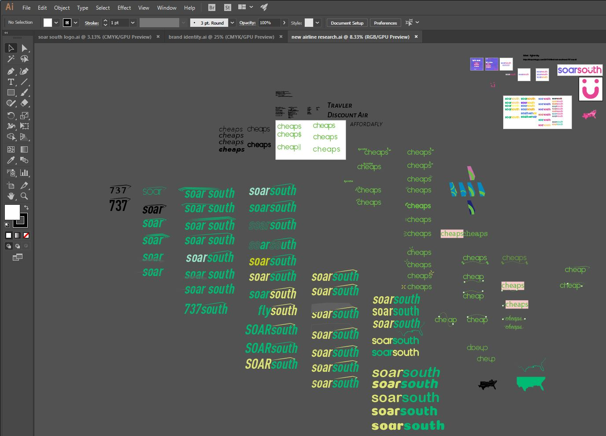

During my undergrad, we were tasked with creating an identity manual for either a fictional airline or rebranding an existing one. The identity manual would include each of these aspects alongside a brief explanation of my thought process:
I began researching major airline business models in the United States. Along the way, Spirit jumped out to me because of all the negative press that is associated with their name- I figured they could use a rebranding the most. To present my research to my peers in an oral presentation, I created this presentation to highlight the main aspects of my findings. A key player I found was what appeared to be a disconnect in the expected user experience of flying and the experience offered by Spirit, so many customers would leave feeling dissatisfied. After looking into the negativity surround Spirit, I compared their business to successful European low-fare airlines to figure out what made airlines such as Ryan Air work so well.
Through this process, I found that I would change so much of Spirit’s business model (airplane model, airports, flightpath) it would make more sense to simply create my own airline business strategy.
My first order of business was to create a logo with an icon I could carry across all aspects of my branding and a restriction of colors and logo uses to ensure a consistent style across all assets. This was a long process to trial and error and refinement going through many directions.
Once I had achieved a strong logo, I was ready to dive into creating all the assets. Throughout this entire design process, I would continue my research to learn as much as I could about an unfamiliar industry and ensure that each design was a well educated solution.
Creating Soar South required extensive research in a field I was very new too. While having been a customer on an airline, designing an entire identity around a business model within about a month’s timespan took a lot of thought and effort, but showed that understanding the industry you are designing for is critical. The entire experience also provided an opportunity to grow knowledgeable with many different aspects of corporate design. Moving forward, I plan to use this experience through continuing to ask questions and gain depth of understating for whatever industry I find myself designing.
Here is another presentation re-branding an olive oil company.